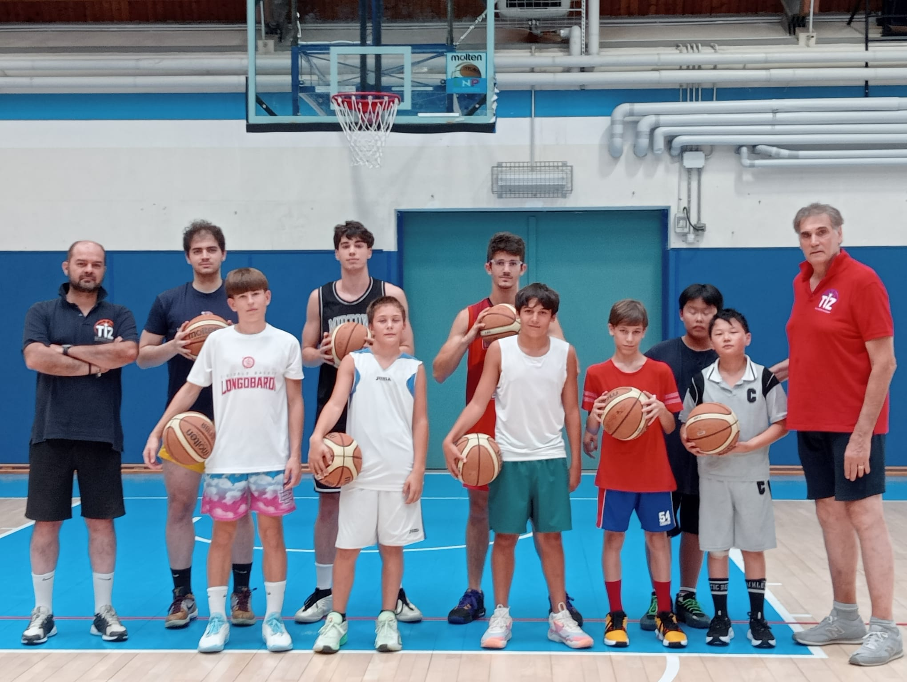
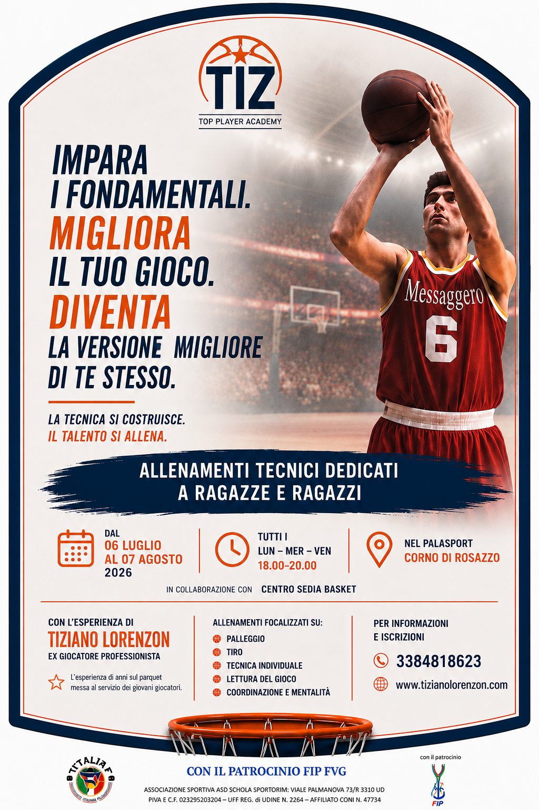
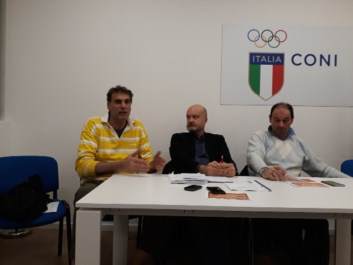
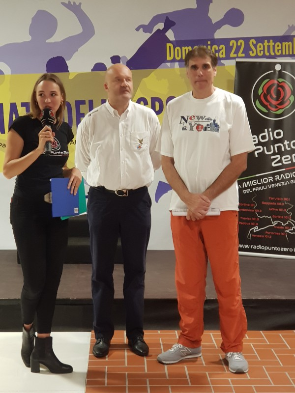

Dal campoSotto un caldo soffocante, questi ragazzi hanno dimostrato una dedizione encomiabile. Con determinazione e serietà, hanno affrontato una sfida complessa senza compromessi: apprendere completamente ogni aspetto del lavoro svolto, nonostante le difficili condizioni climatiche.
Quello che emerge da questa foto non è solo uno scatto di gruppo, ma la testimonianza di un vero impegno. Ragazzi che hanno scelto di non arrendersi di fronte alle avversità, che hanno imparato il significato della perseveranza e che meritano di essere riconosciuti per il loro lavoro.
Complimenti per la dedizione e per aver trasformato una difficoltà in un'opportunità di crescita.

Il nostro lavoro non si ferma mai, gli allenamenti proseguono con l'obiettivo di formare tecnicamente e tatticamente giocatori di basket, lavorando su tutti i necessari fondamentali: oltre che tecnico-tattici, anche fisico – atletici, e psicologici, sviluppati in forma dinamica, relativi al gioco, con palla e soprattutto senza palla.
Il lavoro psicologico è per sviluppare il senso di RESPONSABILITA' per stare in campo, coinvolgendo quei VALORI quali LEALTA', RISPETTO, AMICIZIA, SOLIDARIETA', IMPEGNO necessari a raggiungere quegli obiettivi prefissati ricchi di soddisfazioni, che ci dànno rispetto di se stessi, e una esistenza consapevole anche fuori dal campo.
Tutte queste cose le ho sviluppate e perfezionate in più di 45 anni di pallacanestro, attraverso esercizi molto semplici e funzionali, mettendo in competizione se stesso, dando la consapevolezza di cosa sia giusto, per autocorreggersi, sviluppando così la propria autostima necessaria a migliorarsi e raggiungere gli obiettivi prefissati.
L'intento è quello di diventare un punto di riferimento per tutti quei ragazzi motivati, e che vogliono provare a diventare "GIOCATORE IMPORTANTE", dove per giocatore, si intende la persona che racchiude tutti quei valori accennati, arrivando così ad altissimi livelli.
Il lavoro viene sviluppato durante la stagione nel Palasport di Manzano normalmente la domenica mattina, e Il numero di giocatori per seduta và da un minimo di 3/4 ad un massimo di 7/8, proprio per dare massima attenzione e qualità ai ragazzi, per lo sviluppo dei fondamentali sopra citati.

Tiziano Lorenzon Basketball Personal Coaching ti offre la possibilità di disporre di un programma di allenamento su misura per ogni tua esigenza.
Analisi tecnica ed un programma di lavoro personalizzato.
Un servizio rivolto ad Atleti e Società determinate a sviluppare al massimo le proprie potenzialità.
Tecnici con un importante trascorso ad alto livello pronti a mettere a disposizione le proprie competenze ed esperienze.
Correggeremo abitudini errate, lavorando sugli importanti aspetti psicologici e tecnici del gioco, come leadership, comunicazione, visione di gioco, controllo del tempo, decisioni, atteggiamento in campo. , sulla difesa, sulle spaziature e sui fondamentali.
Ragazzi e Ragazze non esitate a contattarci, inizieremo insieme un percorso di lavoro.
Stabiliremo insieme orari e sedi in modo da rendere il più semplice possibile il vostro grande miglioramento.
Per ulteriori informazioni : Tiziano Lorenzon :3384818623
«Amo la pallacanestro, avendo avuto il privilegio di viverla da giocatore protagonista… ora da allenatore giovanile vedo le lacune del sistema, e vorrei contribuire a cambiarle.»
Vorrei sottoporre all’attenzione delle mie idee, che da diverso tempo vado maturando, relative ad un miglioramento del prodotto basket ed un maggior utilizzo dei giovani giocatori nel campionato di Lega A, il tutto a beneficio della Nazionale.
Le seguenti sono una sorta di riflessioni a voce alta, che provengono dal cuore, perchè amo la pallacanestro, avendo avuto il privilegio di viverla da giocatore protagonista.
Ora da allenatore giovanile mi rendo conto delle attuali lacune del "Sistema Pallacanestro" che non offre alcuna certezza a chi ci lavora, e a chi ha voglia di fare investimenti, modificando troppo spesso le regole in corsa e mercanteggiando categorie, togliendo valore al movimento…è come se tutto fosse in un enorme frullatore… che mescolando a velocità vorticosa genera una continua confusione… dove regnano disordine e mancanza di controllo… non c'è futuro e continuità … e quel che è peggio… che tutto ciò sta cominciando a distruggere nei ragazzi il SOGNO DI DIVENTARE GIOCATORI.
Per es nel calcio questo non avviene in quanto ambiente più tradizionalista e pragmatico oltre ad avere regole precise e consolidate …inoltre mi rendo conto delle carenze che i giovani evidenziano, soprattutto a livello tattico, e mi piacerebbe contribuire per colmare queste lacune. Uno dei principali problemi…tolte alcune eccezioni… è il limitato spazio riservato ai giovani giocatori italiani, a vantaggio di giocatori comunitari di pari età. Le motivazioni sono tante…tecnico-tattiche, atletiche, di mentalità, e non ultime, economiche… Considerando che con le Nazionali giovanili ottengono grandi risultati, spesso vincendo, non si capisce perchè poi, i ragazzi, non trovino spazio nelle squadre senior…viene da pensare che il livello senior sia elevatissimo…oppure quello under sia bassissimo… Partiamo dalla semplice constatazione che…per diventare protagonisti bisogna giocare…meritando il campo… Purtroppo le disposizioni attualmente in vigore, obbligano le società ad avere una quota di giocatori UNDER, senza guardare le effettive capacità dei ragazzi, ma solamente la carta d’identità…che a questo proposito sono ambitissimi fino al momento che mantengono quello status, ma il giorno in cui diventano senior…se non sono bravi…non interessano più a nessuno… Questo oltre che essere moralmente deprecabile perchè non si tiene conto del fatto che i giocatori sono …persone e non merce che puoi accantonare e buttar via a cuor leggero… non incentiva i giovani a migliorarsi avendo comunque il posto garantito…tante volte senza meritarlo, e spesso senza esserselo guadagnato…anche se per un determinato periodo… in pratica vengono a mancare tutti quei requisiti meritocratici che sono alla base di competenze e di un movimento sano e duraturo, e che specialmente garantisca continuità. Inoltre un’altro obiettivo…che ritengo imprescindibile… è attrarre l’attenzione mediatica e degli sponsors, suscitando interesse con una formula accattivante. Avendo fatto la necessaria premessa, sono a proporre quanto segue:
Alle 16 squadre iscritte per 30.000,00 euro corrispondono 480.000,00 euro che saranno a disposizione a fine campionato per i seguenti premi:
Naturalmente questo è solo uno specchietto propositivo, dove si possono cambiare le cifre, o aumentare i soggetti da premio ecc. Sono inoltre sicuro che questa formula può attrarre SPONSORS e TELEVISIONI perché si creerebbe un interesse puntando con lungimiranza alle future generazioni, garantendo continuità e qualità, organizzando anche eventi ad hoc. Per esempio una selezione dei migliori giovani che può partecipare ad un torneo fra selezioni, anche fra club europei o extraeuropei di pari categoria, oppure creando una sorta di eurolega per giovani, sempre con un'ottica di utilità per la Nazionale, e altre iniziative ancora. Credo che incentivando e creando un interesse competitivo da parte di tutti gli "attori" in causa, sia la scintilla che metterà in moto un meccanismo virtuoso, che ha tutte le potenzialità per sfornare giocatori, allenatori, arbitri e società di alto livello. Come si potrà osservare le società che lavorano bene recuperano "l'investimento" di inizio campionato.
Non credo di aver scoperto la panacea di tutti i mali. Forse però adesso sono maturi i tempi per dei cambiamenti, perché è sotto gli occhi di tutti, che il movimento ha bisogno di riforme (auspicate da tutti ma contrastate nei fatti), che diano continuità e soprattutto VALORE, QUALITA' e CONTINUITA' alla pallacanestro. In sostanza, penso che, se un giovane è bravo, non ha difficoltà a trovare spazio in campo…oggi… come in passato, dove non c'era nessun posto garantito per decreto. Purtroppo il modus vivendi, proviente dalla società civile, incentiva l’idea di raggiungere obiettivi con facilità e spesso per diritto, trascurando i doveri che sono dietro. Lo SPORT in generale, e noi, con la pallacanestro in particolare, possiamo contribuire a ripristinare un corretto bilanciamento dei DIRITTI e dei DOVERI nelle giovani generazioni, creando degli UOMINI RESPONSABILI, oltre che dei GIOCATORI MIGLIORI per DIVENTARE PROTAGONISTI nelle massime serie, garantendo così un ricambio continuo per la Nazionale.
Allenamenti sui fondamentali rivolti a giocatori interni ed esterni.
Ogni Domenica dalle 10.00 alle 12.00
Per informazioni telefonare al : 3384818623
